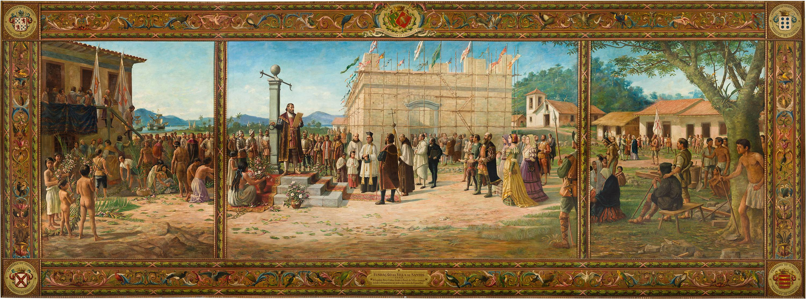

ARTES NO MUSEU
ARQUITETURA E OBRAS PRESENTES NO MUSEU

Fachada da entrada do prédio
A construção do palácio da Bolsa Oficial do Café, uma obra da Companhia Construtora de Santos, de estilo eclético, é considerada a mais importante obra do período. Estilo, volume, cúpulas de cobre, grandes esculturas, vitrais, mármores, o trabalho de artífices estrangeiros e obras de arte construíram o discurso que relacionava a elite cafeeira aos primeiros bandeirantes enquanto construtores pioneiros de uma nação capitaneada por São Paulo. Deste modo em 1920, a Companhia Construtora de santos iniciou as obras do edifício da Bolsa Oficial do Café. A construção retrata uma mistura de vários movimentos arquitetônicos, destacando-se principalmente os estilos neoclássico e barroco. Para a fachada, a Companhia Construtora de Santos adquiriu granito-rosa de Salto de Itu, desenhados pelo arquiteto belga Ernest Chaineux e executados pelos canteiros Antônio e José Longobardi. Logo na entrada nos deparamos com um pequeno vitral acima das portas com o símbolo “Estados Unidos do Brasil”, nome do nosso país na data de abertura do edifício e o brasão do Brasil, composto por dois ramos: um de café e outro de fumaça. A Torre do relógio possui cerca de 40 metros de altura e no seu topo quatro esculturas se destacam na arquitetura, e representam a agricultura, o comércio, a indústria e o marinheiro.


Na arquitetura destacam-se os estilos neoclássico e barroco.

Fundação da Villa de Santos — 1545
Técnica: Óleo sobre tela
Data: 1921–1922
Dimensões: Trata-se de um tríptico (três telas que formam uma cena) medindo 3,25m de altura por 9m de largura
Na tela "FUNDAÇÃO DA VILA DE SANTOS – 1545" o autor (BENEDITO CALIXTO DE JESUS) apresenta a família paulista como a gênese da civilização brasileira ao estabelecer os graus de parentesco, de sucessão e hierarquia nos meios políticos, militares e religiosos das personagens que compõem a cena. Essa localização corresponde atualmente à região da Praça da República. Mais à frente, o autor começa a descrever as edificações do painel, começando pela Igreja da Misericórdia. Cabe destacar que além da Igreja a edificação abrigou o hospital que deu origem à Santa Casa de Misericórdia de Santos.
Na obra "O PORTO DE SANTOS EM 1822", vemos a Cadeia e o Conjunto do Carmo com as igrejas da ordem primeira e terceira e o convento. Dali se vê o ribeirão do Itororó que tem sua nascente no Monte Serrat e deságua no porto. Depois, mais próximo ao monte, vemos o Campo da Misericórdia com a igreja e o Hospital da Santa Casa. Seguindo um pouco mais a direita em direção ao monte temos a Igreja Nossa Senhora do Rosário. Voltando a área portuária vemos a igreja Jesus Maria José e avançando um pouco depois do riacho São Bento podemos observar o Conjunto do Valongo, administrado pelos franciscanos, com a igreja de Santo Antônio e o convento. Na moldura deste painel podemos observar quatro medalhões dispostos nas extremidades. No canto superior esquerdo vemos um brasão com a inscrição: Brasil Colônia 1549–1816. No canto superior direito podemos ler: Brasil-Reino 1816–1822. No canto inferior esquerdo — Trabalho e Ordem, ilustrada por uma colmeia de abelhas. No canto inferior direito — Lavoura e comércio, ilustrado por um capacete alado e o caduceu de Mercúrio, Deus do comércio.
Título: Porto de Santos em 1822
Técnica: Óleo sobre tela
Data: 1921–1922
Dimensões: 325x247 (AxL)cm
Título: Porto de Santos em 1922
Técnica: Óleo sobre tela
Data: 1921–1922
Dimensões: 325x247 (AxL)cm
Já em "O PORTO DE SANTOS EM 1922" o artista exibe todas as transformações desencadeadas pela exportação do café: esta nova cidade é o reflexo político da imigração e do desenvolvimento urbano. Calixto escolheu um ponto de vista a partir do morro do Pacheco. Ali podemos observar o canal do porto que separa as ilhas de São Vicente e de Santo Amaro formando um “L” de cabeça para baixo. Na moldura deste painel podemos observar quatro medalhões dispostos nas extremidades. Na parte superior à esquerda, lê-se: Brasil Império — 1822–1889. Na parte superior, à direita: Brasil Republica — 1889–1922. Na parte inferior, à esquerda: Artes e Indústria, cuja ilustração exibe um conjunto de objetos: uma roda denteada, uma paleta de pintura, um capitel trabalhado, uma lira lembrando a música e a poesia, o busto de Carlos Gomes e a primeira página da partitura de “O Guarani”. Na parte inferior, à direita: Evolução e Progresso, destacando a concepção positivista do artista.
O vitral “A EPOPEIA DOS BANDEIRANTES” se divide em três partes, que se referem a diferentes momentos históricos do Brasil. Ao centro “A visão do Anhanguera, a Mãe D’Ouro e as Mães D’água”, representando o período colonial e a conquista dos sertões pelos bandeirantes; nas laterais “Agricultura e Abundância”, do período imperial, e “Indústria e Commercio” do período republicano. Além disso, é composto por oito bustos de bandeirantes e uma moldura decorada por gêneros agrícolas, fauna, flora, e seres do folclore brasileiro. Apesar de buscar uma interpretação da história nacional sob a perspectiva paulista, Calixto escolheu uma abordagem fantástica, cheia de alegorias, misturando aspectos de uma mitologia europeia clássica a elementos mitológicos, fauna e flora brasileiros. Essa composição, somada a luminosidade tropical proporcionada pelas cores de vidros escolhidas, denotam uma intenção de atribuir uma brasilidade a obra, ainda que em moldes conservadores.
Título: A Epópeia dos Bandeirantes
Técnica: Vitral Criado no Estilo "Art Nouveau"
Data: 1921–1922
INFOGRÁFICO
1920 - INÍCIO DAS OBRAS
A Bolsa começou a funcionar em 1917 em uma pequena repartição, sendo que, no final do século XIX, o desenvolvimento da oconômia cafeeira desencadeou um amplo processo de transformações urbanas na cidade de Santos. Esse período, caracterizado por alguns autores como a Belle Epoque santista, iniciava a necessidade de construção de um monumento que simbolizasse esse apogeu econômico.
1922 - INAUGURAÇÃO
O Palácio da Bolsa Oficial de Café e inaugurado, surgindo duas teorias para a escolha desta data, sendo a primeira em homenagem a opulência e força da elite cafeeira paulista e a segunda seria em homenagem ao centenário da proclamação da independência Benedito Calixto é encarregado de executar as telas e o vitral decorativo do saláo do pregão, onde aconteceriam as negociações do preço do produto. A inauguração do palácio da Bolsa Oficial do Café com as obras de Benedito Calixto ocorreu em 7 de Setembro de 1922.
1970 - ABANDONO DO PRÉDIO
Com o fim das atividades da Bolsa do Café, o prédio é abandonado, sendo sua manutenção relegada a poucas obras para pequenas conservações estruturais, que nem sempre eram suficientes para resolver os problemas apresentados.
1986 - FECHAMENTO DA BOLSA DO CAFE
O Governador do Estado de São Paulo decreta o fechamento ofícial da Bolsa do Café de Santos.

1996 - CRIADO O PROJETO MUSEU DO CAFÉ
O Governados do Estado de São Paulo reune-se com órgãos públicos e privados pera criar o prejeto "MUSEU DO CAFÉ", sendo que em 1997, tem início as obras para restaurar e salvar o prédio do Palácio da Bolsa do Café.
1998 - INTEGRAÇÃO DO MUSEU AO PALÁCIO DA BOLSA OFICIAL DO CAFÉ
Após a restauração e reinauguração do Palácio da Bolsa Ofícial do Café houve a integração deste com o recém criado MUSEU DO CAFÉ.
2000 - INAUGURAÇÃO DA CAFETERIA DO MUSEU DO CAFÉ
Inaugura-se a Cafeteria do Museu que oferece um cardápio variado e, por apresentar uma excelência no preparo, é premiada com o status "PREMIUM" pela Associação Brasileira da Industria de Café (ABIC).
2009 - TOMBAMENTO DA EDIFICAÇÃO PELO IPHAN
A construção do Palácio, pelo estilo eclético, é considerada a mais importante obra do período e, assim, foi a primeira edificação neste etilo a ser tombada pelo Instituto do Patrimônio Histórico e Artístico Nacional (IPHAN).
2015-2016 - RESTAURAÇÃO DO VITRAL "A EPOPEIA DOS BANDEIRANTE"
Entre 2015 e 2016 o vitral "A EPOPEIA DOS BANDEIRANTES" passa por um cuidadoso processo de restauração, resultando em uma exposição temporária chamada de "DESCONTRUINDO UMA EPOPEIA" que representava um pequeno atelier cenográfico com mock-ups de ferramentas utilizadas nas atividades de confecção e restauração de vitrais.
ATUALMENTE
Nos dias do hoje o Museu do Café recebe, anualmente, mais de 350 mil visitantes por ano, os quais aproveitam a visita ao museu para conhecer outros pontos turisticos existentes no Centro Histórico de Santos em uma verdadeira viagem no tempo, podendo ser realizada a pé.
Pesquisas Realizadas
Para conhecer mais sobre o assunto apresentado clique nos links abaixo:
Telas de Benedito Calixto no Museu do CaféVitral Epopeia dos Bandeirantes
Museu do Café
Benedito Calixto